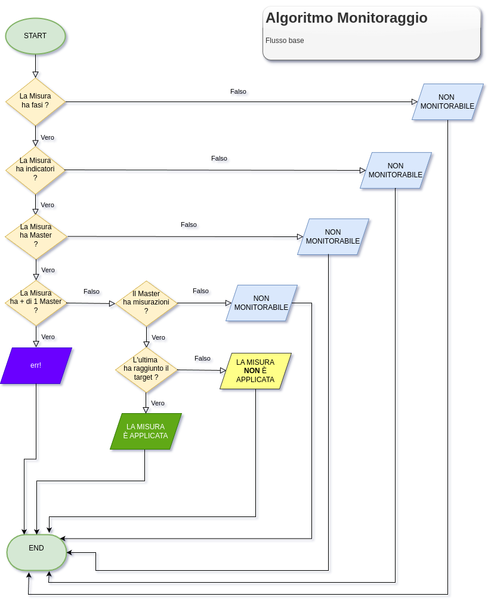

La domanda centrale del monitoraggio è: “Quando è che una misura prevista può essere considerata applicata?”
Tutto l’armamentario concettuale visto finora relativamente al monitoraggio (indicatore di monitoraggio, fase di attuazione della misura, misurazione, misura monitorata etc.) ha come ultimo fine quello di rispondere a questa domanda.
Da tutti i ragionamenti fatti nel capitolo precedente (“Le misure di riduzione del rischio”) emergono alcuni assunti che possono essere posti a caposaldi dei ragionamenti relativi al monitoraggio, e in particolare il seguente:
\({PxI}^{INIZIALE} \geqslant {PxI}^{MITIGATO}\) ˄ \({PxI}^{MITIGATO} \leqslant {PxI}^{MONITORATO}\)
Infatti, il PxI mitigato può essere al più uguale al PxI iniziale (anche se sarebbe auspicabile che le misure previste producessero un effetto!); invece, il PxI monitorato può anche coincidere con il PxI iniziale, laddove le misure previste non risultino effettivamente applicate.
É evidente che la questo punto si torna alla domanda iniziale: quando una misura prevista si dice applicata?
Si può sviluppare, a tal fine, un algoritmo più o meno sofisticato, che considera le varie misurazioni e le incrocia in base a vari criteri; ad esempio: l’ultima misurazione, il tipo di indicatore, lo scarto tra baseline e target, e così via.
Tuttavia, la soluzione scelta, chiamata “criterio lasco”, è molto più semplice. Essa prevede semplicemente l’applicazione di un flag di “indicatore master” su uno, e uno solo, degli indicatori della misura: affinché la misura risulti applicata, è necessario che l’indicatore “master” abbia realizzato il suo target.
Le regole di business sono:
a una misura aggiungiamo un flag di “indicatore fondamentale ai fini del monitoraggio” o “indicatore master” ed è il target di questo indicatore che viene attenzionato dalla tabella, quindi viene contollato se la misurazione di questo indicatore ha raggiunto il target;
l’”indicatore master” di una misura sottoposta a monitoraggio è uno e uno solo entro una misura (occorre implementare la gestione di flag master doppi inseriti erroneamente);
se non sono stati definiti indicatori su una fase, la fase stessa viene ignorata;
se sono stati definiti indicatori ma non è stato definito nessun indicatore “master” la completezza è indecidibile;
se la misurazione dell’indicatore master non ha raggiunto il target dell’indicatore master allora la misura non è considerabile come applicata; viceversa, se l’ultima misurazione dell’indicatore master ha raggiunto il target, allora l’indicatore master è stato realizzato e la misura, a cui l’indicatore è collegato tramite una delle sue fasi di attuazione, può essere considerata applicata;
se l’indicatore master non è misurato, la misura risulta proprio non monitorata (non solo non applicata ma neppure sottoposta a monitoraggio).
Queste definite sopra sono le regole dell’algoritmo dell’applicazione del monitoraggio, che risponde alla domanda: “la misura considerata è stata applicata? si può considerare applicata?”
Come si vede, il modello ha ampi gradi di libertà, per cui vi possono essere molteplici situazioni indecidibili; vari casi sono riportati nella tabella seguente:
| SITUAZIONE | ESITO |
|---|---|
| Misura non articolata in fasi | NON MONITORATA |
| Misura articolata in fasi ma senza indicatori | NON MONITORABILE |
| Misura in fasi con indicatori ma nessun master | NON VALUTABILE |
| Misura in fasi con indicatori ma 2+ master | ERRORE BUSINESS |
| Misura in fasi con indicatore master ma senza misurazioni | NON VALUTATA |
| Misura in fasi con indicatore master con + misurazioni | CONSIDERARE L’ULTIMA |
| Misura in fasi con indicatore master con misurazioni con target non raggiunto | NON APPLICATA |
| Misura in fasi con indicatore master con misurazioni con target non raggiunto | APPLICATA |
|
Nella tabella riportata sopra, le prime 4 situazioni sono anomale ai sensi del monitoraggio ed esulano da questo, mentre le altre 4 sono situazioni ordinarie di monitoraggio e producono esiti più definiti. L’algoritmo di valutazione dell’applicazione di una misura deve quindi considerare tutte queste situazioni e gestire tutti i vari rami; di seguito viene riportato un diagramma di flusso che permette di implementare i vari casi. |
|
